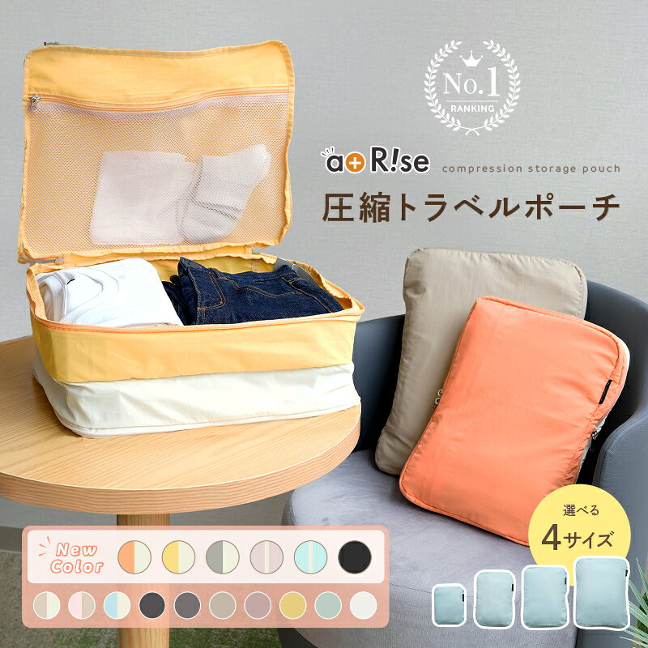

生活雑貨
生活雑貨のおすすめアイテム比較 整理ポーチと収納ケース3選
2026-10-30

※本記事には商品プロモーション(アフィリエイト広告)を含みます【PR】
旅行や外出時の荷物整理に役立つケース・ポーチは種類が多く、どれを選べばよいか迷う方も多いのではないでしょうか。本記事では、レビュー件数・評価の高い生活雑貨3点を楽天市場の商品データをもとに比較し、それぞれの特徴を紹介します。
熱を持つアイテムも収納しやすいケース
旅行や外出時に便利なケースとして注目されているのが『【最大★25％OFFクーポン 11/2 23:59迄】 ★新色登場★《便利な内ポ…』です。新色としてシングルカラー1色、バイカラー5色が追加され、好みの色を選びやすくなりました。耐久性の高いナイロン生地を採用しているとされ、繰り返し使っても傷みにくいよう工夫されている点が商品説明で紹介されています。ヘアアイロンなど熱を持つアイテムを持ち運ぶ際に便利な内ポケットを備えているとされており、旅行用のポーチ類と合わせて使うことで荷物の整理がしやすくなりそうです。レビュー件数は2,559件、平均評価は4.52と高く、多くの利用者から支持されていることがうかがえます。

ファスナーの質にこだわったポーチ
ファスナー部分の品質に注目して選ばれているのが『＼マラソン限定P5倍／【楽天1位受賞】【YKK製ファスナー】【ほつれ穴なし】【撥…』です。開閉を担うファスナーにYKK製を採用しているとされ、縫製部分もほつれによる穴が生じにくいよう工夫されていると商品名に明記されています。撥水性についても商品名でうたわれており、雨や湿気が気になる場面でも使いやすいケースといえそうです。楽天市場で1位を受賞した実績があり、レビュー件数は2,398件、平均評価は4.73と非常に高い評価を集めています。細部の作りを重視する方にとって、選択の基準になりそうなアイテムです。

荷物を種類別に分けられる旅行ポーチセット
スーツケースの中身を整理したい方に向いているのが『【レビュー2000件超！★楽天1位獲得】【雑誌掲載】 トラベルポーチ セット お…』です。サイズや形状が異なる6点のケースがセットになっており、衣類やシューズ、小物など目的に応じて収納を分けられる点が特徴として紹介されています。コットンのような優しい手触りの生地を使用しているとされ、持ち運びしやすいハンドルも付いています。メッシュ素材の部分は中身が見えやすく通気性にも配慮されているとのことです。軽量で柔らかい素材のため、スーツケース内でかさばりにくいとされ、統一感のあるデザインで見た目もまとまりやすい点が魅力です。レビュー件数は2,378件、平均評価は4.71と高く、多くの支持を集めています。

今回紹介した3点は、いずれもレビュー件数が2,000件を超え、平均評価4.5以上と高い支持を集めています。用途や重視したいポイントに合わせて、自分に合ったアイテムを選んでみてください。


読み込み中...